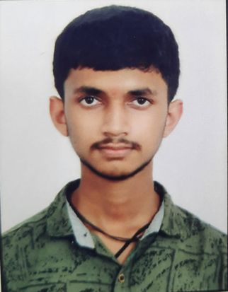

My Resume
Profile Photo

Summary:
-
I am a softer web developer
-
I have learnt HTML
Education
-
I have completed 10 in Navodaya and i secured 73.3%
-
I completed 12 th in Navodaya and i have received 84.4%
-
Currently i am in 3 rd year degree
Work Experience
Skills
-
I have took Udumi corese and I am improving the skills
Certificate
-
I have no certificate related to any development